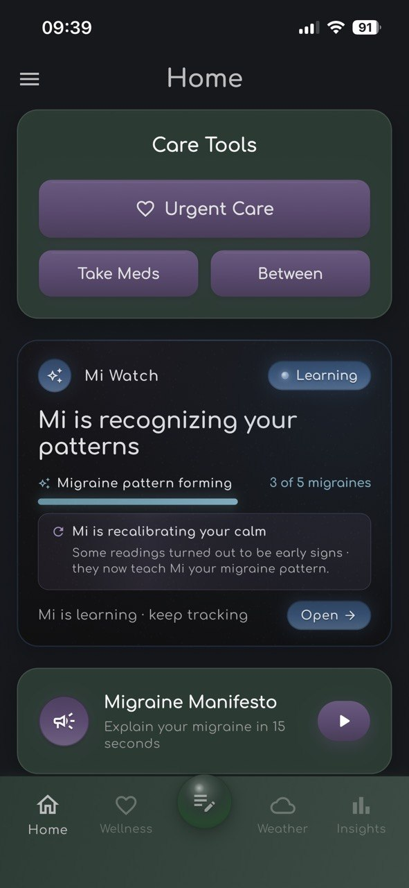
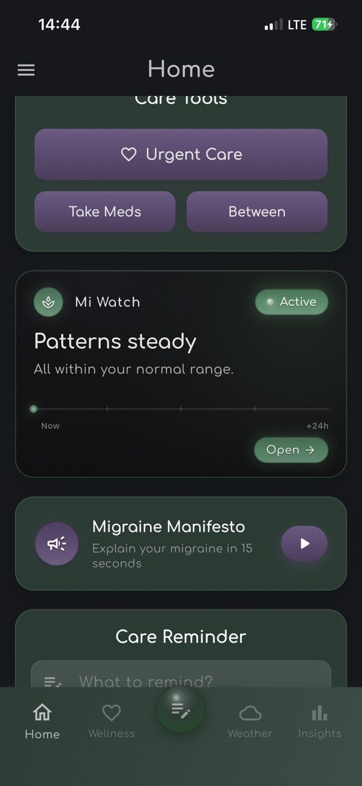
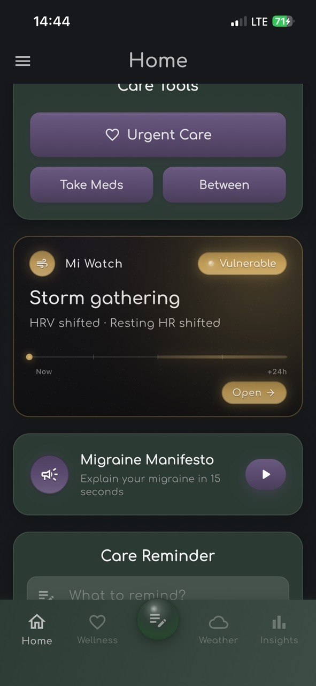
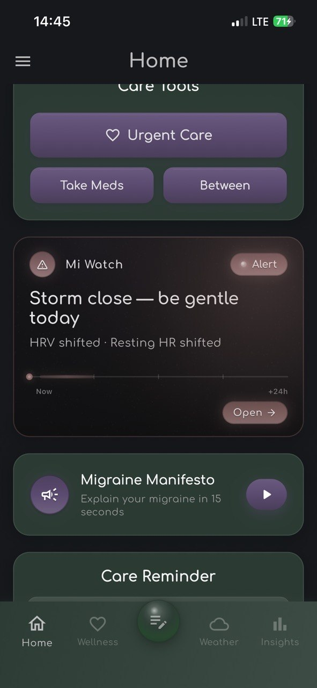

The quiet shift in healthcare
Most healthcare is still reactive. You feel something wrong, you see a doctor, you get a diagnosis, you receive treatment. The model assumes pathology arrives suddenly, declares itself clearly, and waits patiently while you navigate the system.
For chronic conditions, this model has never worked well. Migraine attacks don't wait for clinic hours. Fibromyalgia flares don't announce themselves with definitive blood tests. The body whispers warnings hours before pain arrives, but the warnings are subtle and the warning system — your awareness of your own physiology — has limits no amount of vigilance can overcome.
Something is changing. The wearable sensors most of us already own are quietly becoming sophisticated enough to detect the whispers. Combined with new statistical methods and clinical research linking specific physiological patterns to specific outcomes, we are entering an era where healthcare can become genuinely preemptive — acting before symptoms arrive, in the windows where action matters most.
This article describes that shift, why it is happening now, and what it means for chronic conditions like migraine.
What "preemptive health" actually means
The word preventive is overused in health marketing. Preventive medicine traditionally means broad population-level interventions: vaccines, screening colonoscopies at 50, statins after a certain LDL threshold. These interventions reduce the probability of disease across a population, but they do not tell any individual person when to take action.
Preemptive health is different. It is the use of continuous physiological data, paired with individual-specific patterns, to predict imminent disease states — and to trigger action in the time window where intervention is maximally effective.
The distinction matters because the action windows are short. A statin can be taken any time of day. An anti-migraine medication taken during prodrome (the hours before pain) reduces moderate-to-severe headache progression by 46%; the same medication taken after pain onset works far less well1. Preventive medicine doesn't care about timing. Preemptive medicine is only about timing.
Why now · the four enabling conditions
This era did not begin two years ago, despite the impression that AI is suddenly everywhere. It began when four conditions converged.
1. Clinical evidence that timing matters
The PRODROME trial published in Nature Medicine (2024) established for migraine what cardiologists have known for decades about heart attacks: there exists a window before clinical symptoms where intervention is dramatically more effective than the same intervention applied later1. For migraine, that window is the prodromal phase — the autonomic nervous system shifts occurring hours before pain. CGRP receptor antagonists (ubrogepant, rimegepant) work especially well when administered during this phase.
2. Hardware that can detect autonomic shifts
Heart rate variability has been measurable on the wrist since the original Apple Watch in 2015. But meaningful prodrome detection requires multiple biomarkers — HRV alone is too noisy. Apple Watch Series 8 (2022) added a wrist temperature sensor; combined with HRV, resting heart rate, respiratory rate, and sleep architecture metrics, the wrist now produces enough channels to disambiguate prodrome from ordinary daily fluctuation.
3. Software methods that can personalize
Population-level models do not work for prodrome detection. Your resting heart rate of 55 means something different from your neighbor's 70; your "elevated" might be their normal. Bayesian inference methods that maintain per-user baselines and learn from individual outcome feedback have matured to the point where they can run on smartphone hardware in real time. The math is not new (Thomas Bayes died in 1761), but the engineering required to deploy it personalized for millions of users is recent.
4. Cultural normalization of continuous biomarker tracking
Five years ago, asking someone to wear a sensor 24/7 felt invasive. Today, hundreds of millions of people voluntarily wear Apple Watches, Oura Rings, WHOOP straps, and Garmin devices. The cultural switch from "monitoring is surveillance" to "monitoring is self-knowledge" has happened, especially among the population most likely to suffer chronic conditions in working-age years.
These four conditions converged between 2022 and 2024. We are now in the first commercial deployment phase.
Three pillars of personalized preemptive health
Any system that does this seriously requires three components. Subtract any one and you have a tracking app at best.
Pillar one · continuous multi-channel biomarker monitoring
Not single-channel. Not occasional. Real-time, multi-biomarker, integrated across the daily cycle including sleep. The migraine prodrome is not visible in a single number — it emerges across HRV declining, resting heart rate elevating, wrist temperature shifting, sleep fragmenting. Any one channel produces too many false signals. The combination is what produces actionable confidence.
Pillar two · per-user adaptive learning
Population thresholds fail. The system has to learn each user's signature — the specific pattern that precedes their attacks — and adapt its sensitivity based on real-world outcome feedback. When the system alerts and the predicted event occurs, that is a positive update. When it alerts and the event does not occur, that is a negative update. Over weeks and months, the system converges toward thresholds that match the individual's signal-to-noise ratio.
The honest pitch
This is uncomfortably honest: the system cannot perform well on day one. It needs decisions to learn. The honest pitch acknowledges this and asks users to participate in their own learning curve. Apps that promise immediate accuracy without learning periods are either oversimplifying or lying.
What Mi Watch is doing differently
Mi Watch publishes its confidence at every stage. Users see whether the system is listening (no predictions yet), calibrating (preliminary predictions, learning user-specific signal-to-noise), or fully tuned (after sufficient ground-truth events). The state is visible in-product on every screen — not buried in marketing copy. No accuracy claims are made until validation data supports them.

Pillar three · action timing aligned with treatment windows
Detection without action is just anxiety. Each alert must correspond to something a user can actually do — preventive action in longer windows, medication or behavioral intervention in shorter windows. The two-tier design separates "you might want to prepare" from "act now if you have medication available." Without this distinction, every alert feels equally urgent, and users develop alarm fatigue within weeks.



Where this lands today · migraine prodrome
Migraine is the proving ground for personalized preemptive health, for reasons that are partly tragic and partly fortunate.
Tragic, because 1.1 billion people worldwide live with migraine; the condition is the second leading cause of years lived with disability globally; the economic cost in the United States alone is approximately $36 billion annually in lost productivity2. The need is enormous.
Fortunate, because the biology is unusually well-suited to this approach. Migraine attacks involve hypothalamic activation hours before pain — established through functional MRI studies of nitroglycerin-triggered attacks3 and longitudinal scanning over multiple attack cycles4. The hypothalamus drives autonomic nervous system shifts, which produce measurable biomarker changes accessible to wearable devices.
Practical attempts at wearable-based migraine prediction have been published from research groups567. These have established technical feasibility. What has been missing is the commercial deployment: continuous availability to users, real-world outcome feedback, and personalization that improves with use rather than degrading.
A note on objectivity
I am building one such system — Mi Watch — and I won't pretend objectivity about it. But I will say that the broader category matters more than any particular implementation. Whether the first successful commercial preemptive migraine detection system carries my product name or someone else's is less important than the fact that the category is finally clinically and technologically ready to exist.
What comes next · adjacent conditions
The infrastructure that enables migraine prediction is condition-agnostic. The same hardware that detects autonomic shifts before migraine could detect them before:
Cluster headache. Possibly the most severe pain condition documented, with attacks that present in tight temporal clusters. Cluster patients would benefit enormously from predictive warning, and the autonomic involvement appears similar to migraine.
Fibromyalgia flares. Less well-studied, but chronic pain conditions in this family demonstrate autonomic nervous system dysregulation that may produce detectable wearable signatures hours before flares peak.
POTS (postural orthostatic tachycardia syndrome). Already partially manageable via heart rate awareness; continuous biomarker integration could substantially improve flare prediction.
ME/CFS (myalgic encephalomyelitis / chronic fatigue syndrome). Energy crashes ("post-exertional malaise") follow exertion by 12-48 hours. The biomarkers preceding crashes likely include HRV and sleep metric shifts.
IBS flares. Stress-mediated component is well-documented; sympathetic nervous system shifts may produce detectable wearable signatures.
These are not promises. Each condition requires its own validation work and its own clinical literature establishing the biomarker-outcome relationships. Some will work; some will not; some may require different sensor modalities than currently available consumer wearables provide. The point is that the category — personalized preemptive prediction of chronic disease states from wearable biomarker data — extends naturally beyond migraine, and beyond what any single team can address.
The limits · five honest concerns
This entire field deserves caution, not celebration. Five concerns worth acknowledging:
1. False positives are corrosive
The system that wakes you in the night with a false alarm three weeks in a row loses your trust, even if it later predicts accurately. Adaptive personalization helps, but the underlying problem — that base rates of chronic conditions are low, so even highly specific systems produce false positives in absolute terms — does not disappear. Sustained engagement requires PPV (positive predictive value) at least in the 60-70% range for most conditions.
2. False negatives are dangerous
The other side. A user who has learned to trust their wearable's prediction may not take an attack seriously when the wearable fails to predict it. Systems must be designed with this risk in mind, communicating uncertainty clearly and never positioning themselves as authoritative substitutes for medical judgment.
3. Privacy concerns are legitimate
Continuous biomarker data is intimate data. Who has access? For how long? Can it be subpoenaed? Can it be sold to insurers? Legal frameworks (HIPAA, GDPR, Ukrainian Personal Data Protection Law) cover some of this, but the consumer wearable category sits in regulatory gray zones. Users need transparent answers and meaningful control.
4. Health equity is a real risk
Sophisticated preemptive systems require expensive hardware (Apple Watch starts at $399) and ongoing data plans. The population that could benefit most from migraine prediction includes many who cannot afford the entry cost. As the category matures, sliding-scale access, employer benefit integration, and insurance reimbursement become important to prevent a tier-system of health that exclusively benefits affluent patients.
5. Over-medicalization
Not every awkward feeling is prodrome. Not every restless night is dangerous. There is a real concern that pervasive biomarker monitoring shifts users into a state of continuous health vigilance, where ordinary fluctuations become anxiety triggers. The narrative therapy approach treats this risk seriously — the goal is informed agency, not anxious surveillance.
What this requires of patients
The era of personalized preemptive health asks more of patients than reactive medicine did. Not less.
You have to wear the device consistently. You have to engage with calibration prompts honestly even when you'd rather just dismiss them. You have to develop a relationship with the system through which it learns you. The systems that don't ask this — the ones that promise plug-and-play accuracy — are likely the ones that won't work for you specifically.
The trade is genuine value for genuine effort. The promise is not magic. The promise is that the body's whispers can finally be heard with enough fidelity to act on, and that the actions you can take during prodromal windows can substantially reduce the costs of the attacks themselves.
For most chronic conditions, this is the first time in history that promise has been credible.
The first decade
We are in the first decade of personalized preemptive health. The first commercially deployed systems are arriving now. The first validation studies are being designed. The first generation of patients is just beginning to develop relationships with the systems that will know them well by 2030.
What happens next depends on whether the early implementations are designed with honest care or with marketing optimism, on whether regulators support the category or smother it with inappropriate medical-device classifications, on whether the technology stays in service of patients or gets absorbed by insurance optimization or employer surveillance.
Mi Watch is one attempt at honest care. I built it from inside chronic migraine, knowing the cost of getting this wrong. Whatever the broader field becomes, the principles matter: personalization beats population averages, outcome feedback beats static models, narrative framing beats clinical detachment, transparency beats marketing claims.
The body has been whispering all along. We are finally building the listeners.